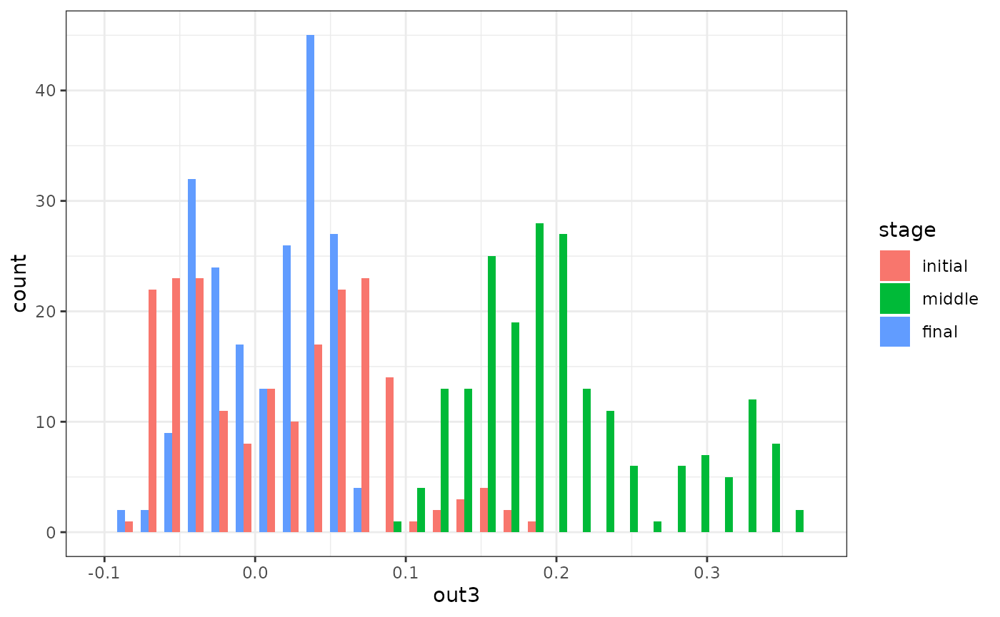

Introduction
The whole story starts with a dynamic model.
Formally speaking, a dynamic model is a set of equations that specify how all the variables of a system changes over time. It usually takes the form of (stochastic) differential/difference equations.
These dynamic models is rather abstract, so they can only be used for computation when they are implemented in a simulation function. A simulation function is a function that simulate how the model variables change over time. It takes some parameters as input, and returns a recording of the simulation process.
Currently, the whole package can only support the simulation function with certain format. It should takes (besides from other parameters) lists of model parameters as input, and give a matrix as the output. If your original simulation function is in another format, maybe some modification is needed.
simlandr package provides a simulation function for a simple toy model, which is called sim_fun_test(). You can use this as an example of the correct function format. I will also use this function as an example through out this vignette. It takes par1 and par2 as parameters: par1 should be a list containing var1 and var2, and par2 should be a list containing var3. It takes this nested structure because real-life functions often have a bunch of parameters in different categories (e.g., starting values, model parameters, parameters that control the behavior of the simulation function, etc.) To avoid confusions in terms, the package refers to these first-layer parameters as pars, and second-layer parameters as vars.
sim_fun_test
#> function (par1, par2, length = 1000)
#> {
#> output <- matrix(nrow = length, ncol = 3)
#> colnames(output) <- c("out1", "out2", "out3")
#> output[1, ] <- c(par1$var1, par2$var2, rnorm(1, sd = 0.01))
#> for (i in 2:length) {
#> output[i, 1] <- 0.5 * output[i - 1, 1] + output[i - 1,
#> 2] + par2$var3 + par1$var1 * par2$var2
#> output[i, 2] <- -0.5 * output[i - 1, 1] + output[i -
#> 1, 2] + par2$var3
#> output[i, 3] <- output[i - 1, 3] + rnorm(1, sd = 0.01)
#> }
#> return(output)
#> }
#> <bytecode: 0x7fc7c2410870>
#> <environment: namespace:simlandr>Single simulation
For the author of a simulation function, running a single simulation is easy. You can just run the function normally, and assign the output to a variable. (If you are using others’ simulation function, please read its documentation or ask the author about how to run it correctly.)
single_test <- sim_fun_test(
par1 = list(var1 = 1),
par2 = list(var2 = 1, var3 = 0)
)
head(single_test)
#> out1 out2 out3
#> [1,] 1.00000 1.00000 0.003656176
#> [2,] 2.50000 0.50000 -0.002373580
#> [3,] 2.75000 -0.75000 0.004649156
#> [4,] 1.62500 -2.12500 -0.005909314
#> [5,] -0.31250 -2.93750 -0.003658488
#> [6,] -2.09375 -2.78125 0.009689289For Monte-Carlo methods, it is important that the simulation converges. In our case, it means the distribution of the system is roughly stable. Only when the distribution estimation is good enough can we construct reasonable landscapes based on that. simlandr provides a function check_conv() to check if the simulation converges. It takes the initial, middle, and final parts of the simulation result and calculate distributions based on that. If these distributions look similar, we can say the simulation already converges. A rare exception is that the simulation is so short or the noise of the system is so low that during the whole simulation the system is in one local stable state. A rough knowledge of the system would be enough to rule out this situation.
check_conv(single_test, c("out1", "out2", "out3"))
#> `stat_bin()` using `bins = 30`. Pick better value with `binwidth`.
#> Press <Enter> to see the next plot...
#> `stat_bin()` using `bins = 30`. Pick better value with `binwidth`.
#> Press <Enter> to see the next plot...
#> `stat_bin()` using `bins = 30`. Pick better value with `binwidth`.
#> Press <Enter> to see the next plot...From the plots, we can see that variables out1 and out2 have converged, but out3 has not. However, as you might already realize, out3 is basically a 1d random walk process. Its distribution never converges (so it can provide a good example of non-convergence). Therefore, we will not extend the simulation length.
Out-of-memory storage of the simulation output
Sometimes the output of the simulation is so large that it cannot be handled properly in the following computation. (Rule of thumb: retain matrices of > 1 GB in memory is likely to produce future problems in a computer with 8 GB memory.) In this case, you can use the bigmemory package to put it into your hard drive. bigmemory only preserves a pointer in the memory, so it can save the memory space significantly. In most cases, you can treat it as a normal matrix. As far as I have tested, simlandr is fully compatible with bigmemory.
# NOT RUN
single_test <- bigmemory::as.big.matrix(single_test, backingfile = "single_test.bin", descriptorfile = "single_test.desc")The pointer only exists in a single session. In other words, if you close the session and reload the workspace image, the pointers will become NULL, and bigmemory attachment does not restore by itself. In order to use it again, use the following command to attach the file.
To avoid compatibility problems, this vignette does not run out-of-memory related codes.
# NOT RUN
single_test <- bigmemory::attach.big.matrix("single_test")⚠ WARNING
Due to a bug of RStudio (https://github.com/rstudio/rstudio/issues/8923), its variable inspector cannot handle objects with null external pointers. Sometimes it results in a fatal error when loading workspace image with previous bigmemory-related objects.
Current work-around before the bug is fixed:
- Turn off “Restore .RData into workspace at startup” at Tools -> Project Options -> General
- Switch the variable inspector to “Manual Refresh Only”
- Load the workspace image
- Attach all
bigmemory-related objects usingbigmemory::attach.big.matrix(),simlandr::attach.hash_big.matrix()orsimlandr::attach_all_matrices()(introduced later).
After that, you can safely use/refresh the variable inspector.
To reuse these images on a hard drive, big.matrix class in bigmemory requires an explicit file name for each matrix. This can be cumbersome if you need to handle a lot of matrices. (And this is even a bigger problem for batch simulation; see next section.) Therefore, simlandr provides a hash-big.matrix class to solve this problem. The hash-big.matrix class is a modification of big.matrix class in big.memory package, but it automatically generates the file names using the md5 values of the matrices. (For those who are not familiar with md5: it is a hash algorithm that can guarantee to give different names to different matrices in a reasonable simulation context.) The md5 value is also stored in the md5 slot of hash-big.matrix objects. Therefore, the file link can also be restored automatically without having to specify a file name. By default, all the backing files of hash-big.matrix objects are in \bp directory.
# NOT RUN
single_test <- as.hash_big.matrix(single_test)
single_test <- attach.hash_big.matrix(single_test)Batch simulation
Sometimes you need to simulate a set of models with different parameter values. simlandr provides several tools to do this easily.
First, you need to make a var_grid to specify the conditions of these simulations in terms of var values. The following is an example.
## Step 1: create a variable set
batch_test <- new_var_set()
## Step 2: add variable and its starting, end, and increment values of the sequence (passed to `seq()`) to the set.
batch_test <- batch_test %>%
add_var("par2", "var3", 0, 0.5, 0.1)
## Step 3: make variable grids
batch_test_grid <- make_var_grid(batch_test)Then you can run the batch simulation. simlandr use out-of-memory storage for batch simulations by default because in most times batch simulation will result in very large data objects. In this case, each simulation result is stored in a separate file. Thanks to the hash-big.matrix class, you do not have to name each file by yourself.
simlandr also provides a attach_all_matrices() function to help you attach all the out-of-memory hash-big.matrixs related to a batch simulation. Use this if you want to load previous workspace image with (out-of-memory) batch simulation results. Keep in mind that the WARNING above also holds for this.
# NOT RUN
batch_test_result <- batch_simulation(batch_test_grid, sim_fun_test,
default_list = list(
par1 = list(var1 = 0),
par2 = list(var2 = 0, var3 = 0)
)
)
batch_test_result <- attach_all_matrices(batch_test_result)If you want to keep all the original data in the memory, you can use bigmemory = FALSE to disable this.
batch_test_result <- batch_simulation(batch_test_grid, sim_fun_test,
default_list = list(
par1 = list(var1 = 0),
par2 = list(var2 = 0, var3 = 0)
),
bigmemory = FALSE
)The output of batch_simulation() function is a batch_simulation object, which is, basically, a complex data.frame with simulation outputs and corresponding parameter values. You can manipulate it as a data.frame for your purpose.
print(batch_test_result)
#> Output(s) from 6 simulations.
print(tibble::as_tibble(batch_test_result))
#> # A tibble: 6 x 3
#> var_list var3 output
#> <list> <dbl> <list>
#> 1 <var_list [1]> 0 <dbl[,3] [1,000 × 3]>
#> 2 <var_list [1]> 0.1 <dbl[,3] [1,000 × 3]>
#> 3 <var_list [1]> 0.2 <dbl[,3] [1,000 × 3]>
#> 4 <var_list [1]> 0.3 <dbl[,3] [1,000 × 3]>
#> 5 <var_list [1]> 0.4 <dbl[,3] [1,000 × 3]>
#> 6 <var_list [1]> 0.5 <dbl[,3] [1,000 × 3]>batch_simulation objects are also the base for constructing landscapes from multiple simulations. See other vignettes for details.